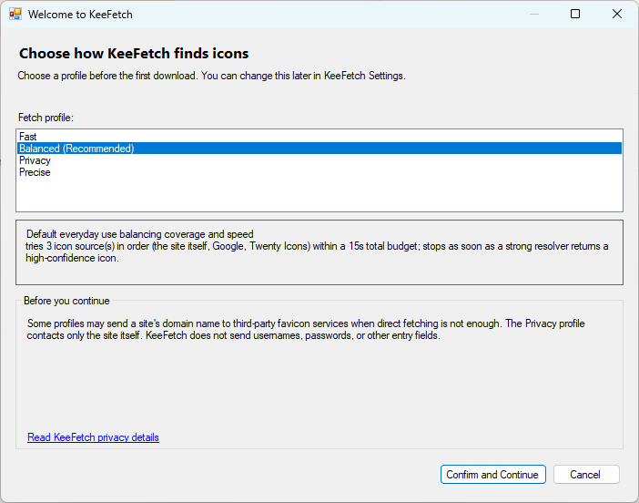
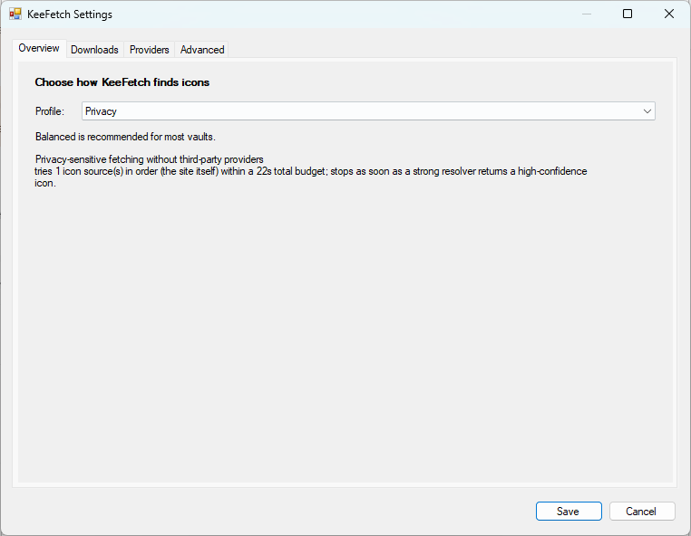
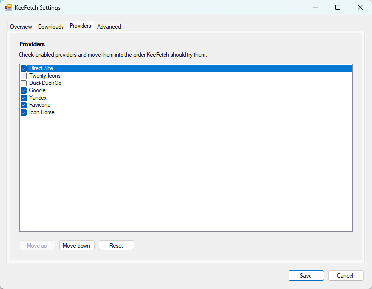
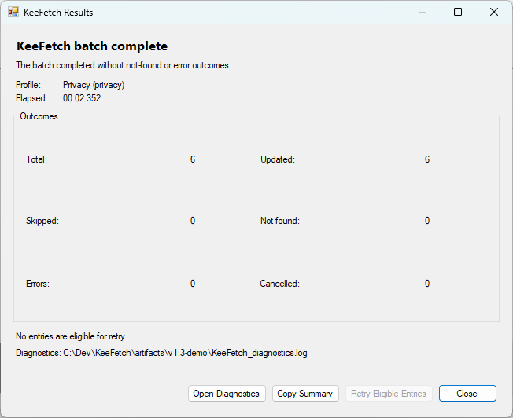

KeeFetch / Getting started
Get your first icon.
Install, use, update, verify and roll back the KeeFetch plugin for KeePass.
Requirements
KeePass 2.x and .NET Framework 4.8. The release validation target is KeePass 2.60 on Windows. This plugin is for KeePass, not KeePassXC.
Install
- Download
KeeFetch.plgxfrom the latest stable release. - Close KeePass. Copy the plugin into the
Pluginsfolder besideKeePass.exe. For a portable install this isKeePass/Plugins/; a typical installed path is%ProgramFiles%/KeePass Password Safe 2/Plugins/. - Restart KeePass. Check Tools → Plugins and the Tools → KeeFetch menu.
Use one format: PLGX, or the release DLL. Do not install both copies.
First run
In the v1.3 preview, the first download asks you to choose a profile and explains third-party requests. Confirming saves the choice; Cancel leaves settings unchanged and aborts the download. Change your choice later under Tools → KeeFetch → Settings.

Change your settings
Settings has Overview, Downloads, Providers and Advanced tabs. Save applies the draft; Cancel discards it.


Single entry
Select an entry, open its context menu, and choose KeeFetch – Download Favicons. KeeFetch reads the URL and can use the title as a domain fallback if configured.
Group
Use the KeeFetch download command on a group to include its entries and subgroups. The skip-existing-icons option helps preserve icons you already chose.
Entire database
Choose Tools → KeeFetch → Download All Favicons and confirm the entry count. Recycle Bin entries are excluded. Back up the database before a large update.
The v1.3 completion screen separates updated, skipped, not-found, error and cancelled outcomes. A cancelled run can keep icons already applied. Retry Eligible retries only eligible misses/errors once; the second summary offers no further retry.

Update
Back up the database and KeePass configuration, close KeePass, replace the old plugin, and restart. Legacy Fast, Balanced and Thorough migrate to Fast, Balanced and Precise. Custom and unknown legacy values use Custom; verify your providers and timeouts after migration.
Uninstall
Close KeePass and remove KeeFetch from its Plugins folder. Downloaded icons stay in the database. KeeFetch configuration keys can remain in the KeePass configuration.
Roll back
Close KeePass, replace the plugin with the saved earlier version, then restore your backed-up configuration if settings changed. Restore the database backup if you need to undo icon changes. A plugin downgrade alone cannot undo them.
Verify release
Download artifacts from the repository's release page. Releases that include SHA256SUMS.txt allow you to compare the exact downloaded files:
Get-FileHash -Algorithm SHA256 ./KeeFetch.plgx
Get-FileHash -Algorithm SHA256 ./KeeFetch.dllCompare each hash with its matching filename in the release checksum file before installation. Checksum files are planned for v1.3; they are not advertised as a v1.2 asset.